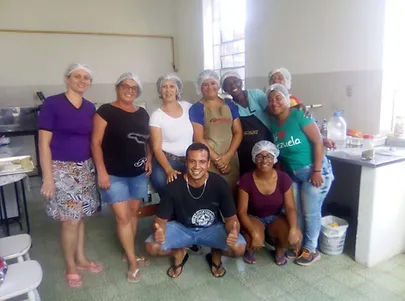

Projetos
Projeto Quem Luta Não Briga
COORDENAÇÃO: Sérgio Pereira Ferreira Superintendente de Desporto. da Secretaria Municipal de Educação e Desporto – SMED. Fabrício Boscolo Del Vecchio Prof. Dr. da Universidade Federal de Pelotas – UFPEL. Rossano Diniz Prof. Especialista SMED, Mestre ESEF/UFPel. Filiado a FGT, CBTKD, PATU, WTF.
O projeto proporciona treino de Taekwondo, para nossas crianças e jovens duas vezes por semana. O projeto Quem Luta não Briga envolve atividades físicas e culturais, o Taekwondo tem como objetivo resgatar a identidade da população através do esporte. Este projeto é de educação física, moral, intelectual e profissional.Notas de Esperança
Professor, maestro, músico, compositor, arranjador e produtor: Sérgio Guimarães. O Projeto “Notas de Esperança” conta com o patrocínio, a parceria e o apoio cultural efetivo e imprescindível da ECOSUL.
O projeto oferece oficinas como violão, bateria e outras artes aos alunos. Em comemoração aos 120 anos de vida do fundador do IMDAZ, foi ovacionado no Teatro Guarani. E ao longo dos anos, seus grupos artísticos se apresentaram na Feira do Livro de Pelotas, FENADOCE, Associação Comercial, UCPEL, UFPEL, dentre outras instituições.
Banda Marcial
Com vários instrumentos, os alunos tem aulas de música da mais alta qualidade.
A Banda de Música é coordenada pelo Maestro Sérgio Guimarães em parceria com o professor Jonas Almeida. O projeto abrange as crianças de 12 a 17 anos, com aulas semanais na instituição. Muito além de música, o projeto pensa na socialização das crianças e adolescentes através da música, incentivando valores como a responsabilidade, o respeito e o cuidado.
Dança
O projeto mostra que todo mundo pode conhecer o próprio corpo tendo percepção do próprio espaço e do outro, ritmo e respeito.
Dançar para se movimentar, para aprender a respeitar o espaço do outro, para aprender sobre o próprio corpo. Dançar para aprender sobre ritmos, para sentir a música e expressar sentimentos.
Clube de Mães
O projeto realizado com mães, com atividades de culinária.
O Clube de Mães, surgiu com a ideia de ajudar as mães das nossas crianças a terem uma auxilio na renda, através da confecção de doces e salgados. As atividades ocorrem semanalmente, conduzidas por uma voluntária. Nos encontros as mulheres, aprendem a fazer receitas como de Bolo de Aniversário, Esfirra, entre outros exemplos. Os alimentos produzidos no curso, são distribuídos na hora do lanche para os alunos.
Reforço Escolar
Um espaço para compreender e absorver os temas que muitas vezes são facilmente esquecidos apenas se ensinados na escola.
Não são poucas as crianças que encontramos com muita dificuldade em ler, escrever e interpretar. Para sanar esse problema que é uma ameaça ao futuro do nosso país, o IMDAZ possui profissionais especiais focados na alfabetização e reforço escolar.
Educação Infantil
Educando o futuro.
As cores, as letras, os números... São tantas coisas a se trabalhar com os pequeninos! Sem falar nos valores de ética que devem ser ensinados desde cedo.